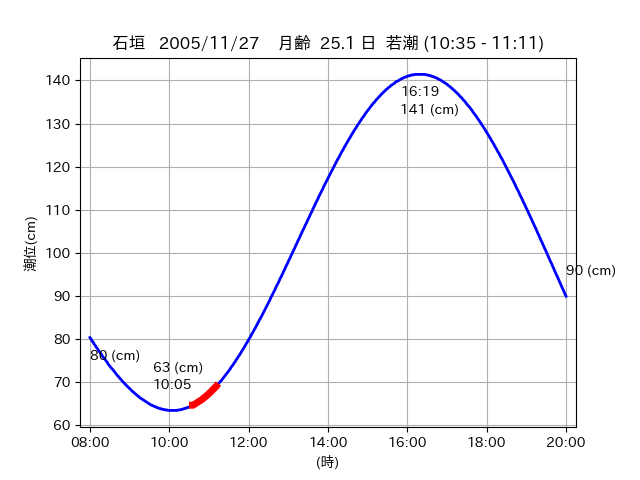
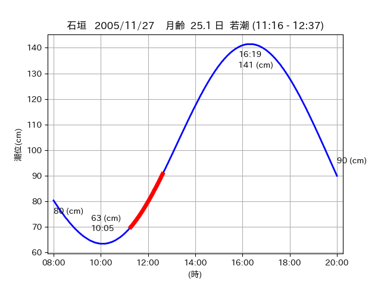
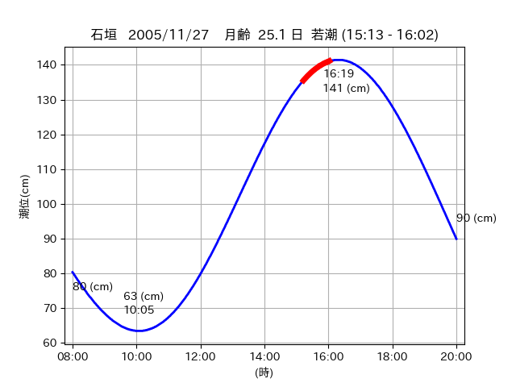

<!DOCTYPE html>
<html>
<head>
    
    <meta http-equiv="content-type" content="text/html; charset=UTF-8" />
    
        <script>
            L_NO_TOUCH = false;
            L_DISABLE_3D = false;
        </script>
    
    <style>html, body {width: 100%;height: 100%;margin: 0;padding: 0;}</style>
    <style>#map {position:absolute;top:0;bottom:0;right:0;left:0;}</style>
    <script src="https://cdn.jsdelivr.net/npm/leaflet@1.9.3/dist/leaflet.js"></script>
    <script src="https://code.jquery.com/jquery-3.7.1.min.js"></script>
    <script src="https://cdn.jsdelivr.net/npm/bootstrap@5.2.2/dist/js/bootstrap.bundle.min.js"></script>
    <script src="https://cdnjs.cloudflare.com/ajax/libs/Leaflet.awesome-markers/2.0.2/leaflet.awesome-markers.js"></script>
    <link rel="stylesheet" href="https://cdn.jsdelivr.net/npm/leaflet@1.9.3/dist/leaflet.css"/>
    <link rel="stylesheet" href="https://cdn.jsdelivr.net/npm/bootstrap@5.2.2/dist/css/bootstrap.min.css"/>
    <link rel="stylesheet" href="https://netdna.bootstrapcdn.com/bootstrap/3.0.0/css/bootstrap-glyphicons.css"/>
    <link rel="stylesheet" href="https://cdn.jsdelivr.net/npm/@fortawesome/fontawesome-free@6.2.0/css/all.min.css"/>
    <link rel="stylesheet" href="https://cdnjs.cloudflare.com/ajax/libs/Leaflet.awesome-markers/2.0.2/leaflet.awesome-markers.css"/>
    <link rel="stylesheet" href="https://cdn.jsdelivr.net/gh/python-visualization/folium/folium/templates/leaflet.awesome.rotate.min.css"/>
    
            <meta name="viewport" content="width=device-width,
                initial-scale=1.0, maximum-scale=1.0, user-scalable=no" />
            <style>
                #map_07ffeb1b71a9a63c1c87be3c21a1f3e7 {
                    position: relative;
                    width: 2048.0px;
                    height: 1600.0px;
                    left: 0.0%;
                    top: 0.0%;
                }
                .leaflet-container { font-size: 1rem; }
            </style>
        
</head>
<body>
    
    
            <div class="folium-map" id="map_07ffeb1b71a9a63c1c87be3c21a1f3e7" ></div>
        
</body>
<script>
    
    
            var map_07ffeb1b71a9a63c1c87be3c21a1f3e7 = L.map(
                "map_07ffeb1b71a9a63c1c87be3c21a1f3e7",
                {
                    center: [24.489, 124.298],
                    crs: L.CRS.EPSG3857,
                    ...{
  "zoom": 12,
  "zoomControl": true,
  "preferCanvas": false,
}

                }
            );

            

        
    
            var tile_layer_b79677b46c46d129993a200b58a60c14 = L.tileLayer(
                "https://cyberjapandata.gsi.go.jp/xyz/seamlessphoto/{z}/{x}/{y}.jpg",
                {
  "minZoom": 0,
  "maxZoom": 18,
  "maxNativeZoom": 18,
  "noWrap": false,
  "attribution": "\u5730\u7406\u9662\u5730\u56f3",
  "subdomains": "abc",
  "detectRetina": false,
  "tms": false,
  "opacity": 1,
}

            );
        
    
            tile_layer_b79677b46c46d129993a200b58a60c14.addTo(map_07ffeb1b71a9a63c1c87be3c21a1f3e7);
        
    
            var marker_fa71a62a10a4731c9a4dd72305f80f6e = L.marker(
                [24.5627, 124.3334],
                {
}
            ).addTo(map_07ffeb1b71a9a63c1c87be3c21a1f3e7);
        
    
            var icon_d19ccf641c9171f0f15a26334da414f5 = L.AwesomeMarkers.icon(
                {
  "markerColor": "orange",
  "iconColor": "white",
  "icon": "info-sign",
  "prefix": "glyphicon",
  "extraClasses": "fa-rotate-0",
}
            );
        
    
        var popup_5cacd77227d96f764854159d21ae4c3d = L.popup({
  "maxWidth": "100%",
});

        
            
                var html_ccefc5290e12dce8e28f8a19b4fb7ed9 = $(`<div id="html_ccefc5290e12dce8e28f8a19b4fb7ed9" style="width: 100.0%; height: 100.0%;"><table><tr><td></td></tr><tr><td><center>20051127 No.1 </center></table></td></tr></table</div>`)[0];
                popup_5cacd77227d96f764854159d21ae4c3d.setContent(html_ccefc5290e12dce8e28f8a19b4fb7ed9);
            
        

        marker_fa71a62a10a4731c9a4dd72305f80f6e.bindPopup(popup_5cacd77227d96f764854159d21ae4c3d)
        ;

        
    
    
                marker_fa71a62a10a4731c9a4dd72305f80f6e.setIcon(icon_d19ccf641c9171f0f15a26334da414f5);
            
    
            var poly_line_900d9154b1f9b8720498d7cb2bc50aa8 = L.polyline(
                [[24.5627, 124.3334], [24.5609, 124.334]],
                {"bubblingMouseEvents": true, "color": "#00FFFF", "dashArray": null, "dashOffset": null, "fill": false, "fillColor": "#00FFFF", "fillOpacity": 0.2, "fillRule": "evenodd", "lineCap": "round", "lineJoin": "round", "noClip": false, "opacity": 1.0, "smoothFactor": 1.0, "stroke": true, "weight": 3}
            ).addTo(map_07ffeb1b71a9a63c1c87be3c21a1f3e7);
        
    
            var marker_4394f6f6809555e6fd363da3a3287f0f = L.marker(
                [24.5573, 124.3333],
                {
}
            ).addTo(map_07ffeb1b71a9a63c1c87be3c21a1f3e7);
        
    
            var icon_5ef6bf40a1ae15f080aff6ca8409d549 = L.AwesomeMarkers.icon(
                {
  "markerColor": "orange",
  "iconColor": "white",
  "icon": "info-sign",
  "prefix": "glyphicon",
  "extraClasses": "fa-rotate-0",
}
            );
        
    
        var popup_dcc1814a5a56db81bafc7b427d3b6572 = L.popup({
  "maxWidth": "100%",
});

        
            
                var html_5ec2ecb52e46e03dc25ca2a6dd042cc7 = $(`<div id="html_5ec2ecb52e46e03dc25ca2a6dd042cc7" style="width: 100.0%; height: 100.0%;"><table><tr><td></td></tr><tr><td><center>20051127 No.2 </center></table></td></tr></table</div>`)[0];
                popup_dcc1814a5a56db81bafc7b427d3b6572.setContent(html_5ec2ecb52e46e03dc25ca2a6dd042cc7);
            
        

        marker_4394f6f6809555e6fd363da3a3287f0f.bindPopup(popup_dcc1814a5a56db81bafc7b427d3b6572)
        ;

        
    
    
                marker_4394f6f6809555e6fd363da3a3287f0f.setIcon(icon_5ef6bf40a1ae15f080aff6ca8409d549);
            
    
            var poly_line_8fea6bbcaa53dac6cb8ca0b53d1a7718 = L.polyline(
                [[24.5573, 124.3333], [24.555, 124.329]],
                {"bubblingMouseEvents": true, "color": "#00FFFF", "dashArray": null, "dashOffset": null, "fill": false, "fillColor": "#00FFFF", "fillOpacity": 0.2, "fillRule": "evenodd", "lineCap": "round", "lineJoin": "round", "noClip": false, "opacity": 1.0, "smoothFactor": 1.0, "stroke": true, "weight": 3}
            ).addTo(map_07ffeb1b71a9a63c1c87be3c21a1f3e7);
        
    
            var marker_94cc4ae6ff2af672d243fa1d8d048482 = L.marker(
                [24.4962, 124.2971],
                {
}
            ).addTo(map_07ffeb1b71a9a63c1c87be3c21a1f3e7);
        
    
            var icon_67d6870179cdf47715b59ea47f7e13a0 = L.AwesomeMarkers.icon(
                {
  "markerColor": "orange",
  "iconColor": "white",
  "icon": "info-sign",
  "prefix": "glyphicon",
  "extraClasses": "fa-rotate-0",
}
            );
        
    
        var popup_ae230f3280074e0d17f7fc66773cf367 = L.popup({
  "maxWidth": "100%",
});

        
            
                var html_e3f9a5a893e2a4be31349cef61c5e6eb = $(`<div id="html_e3f9a5a893e2a4be31349cef61c5e6eb" style="width: 100.0%; height: 100.0%;"><table><tr><td></td></tr><tr><td><center>20051127 No.3 </center></table></td></tr></table</div>`)[0];
                popup_ae230f3280074e0d17f7fc66773cf367.setContent(html_e3f9a5a893e2a4be31349cef61c5e6eb);
            
        

        marker_94cc4ae6ff2af672d243fa1d8d048482.bindPopup(popup_ae230f3280074e0d17f7fc66773cf367)
        ;

        
    
    
                marker_94cc4ae6ff2af672d243fa1d8d048482.setIcon(icon_67d6870179cdf47715b59ea47f7e13a0);
            
    
            var poly_line_ae39a1d53e17806ea1ebfbf91cd1099f = L.polyline(
                [[24.4962, 124.2971], [24.4828, 124.2986]],
                {"bubblingMouseEvents": true, "color": "#00FFFF", "dashArray": null, "dashOffset": null, "fill": false, "fillColor": "#00FFFF", "fillOpacity": 0.2, "fillRule": "evenodd", "lineCap": "round", "lineJoin": "round", "noClip": false, "opacity": 1.0, "smoothFactor": 1.0, "stroke": true, "weight": 3}
            ).addTo(map_07ffeb1b71a9a63c1c87be3c21a1f3e7);
        
</script>
</html>